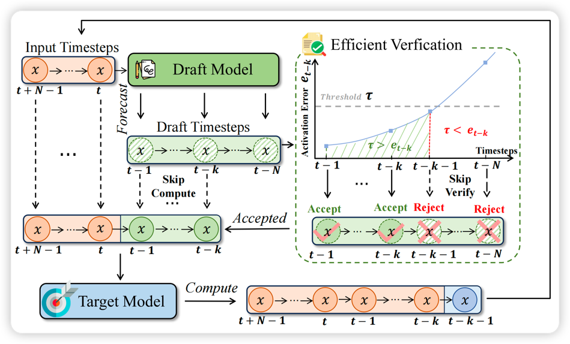
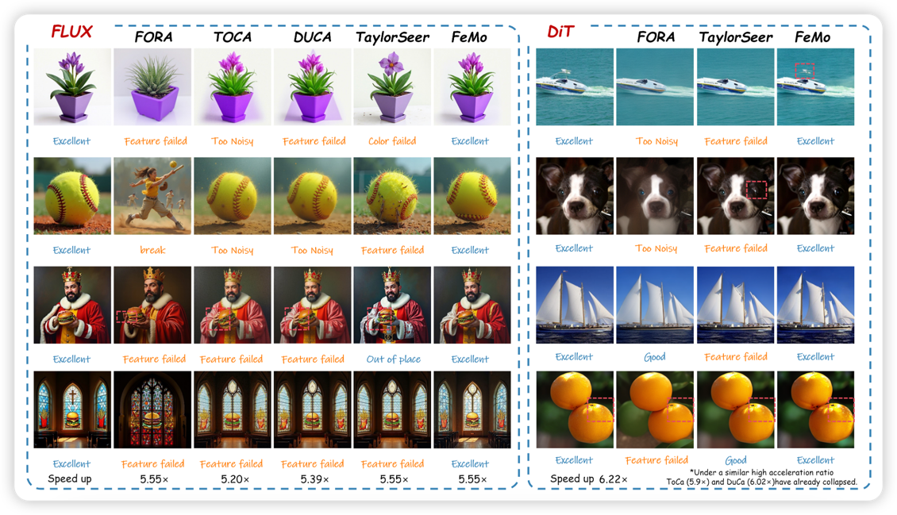
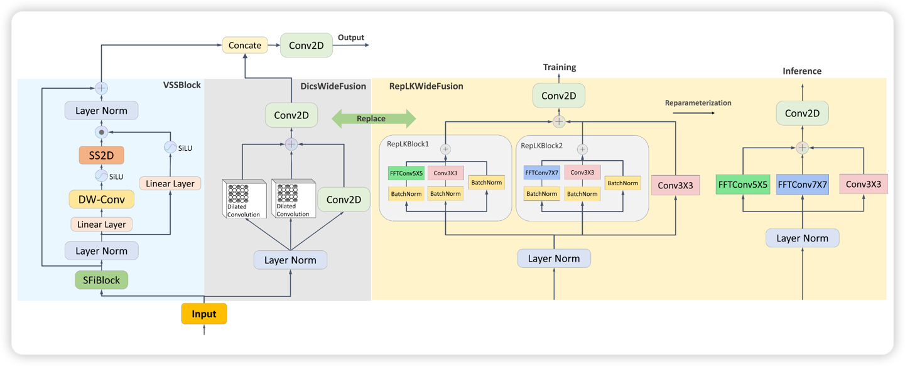
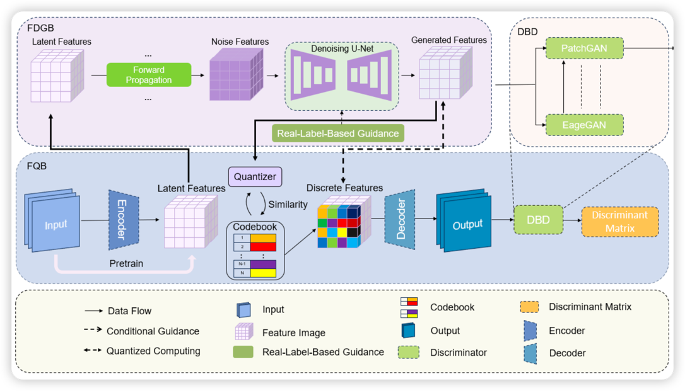
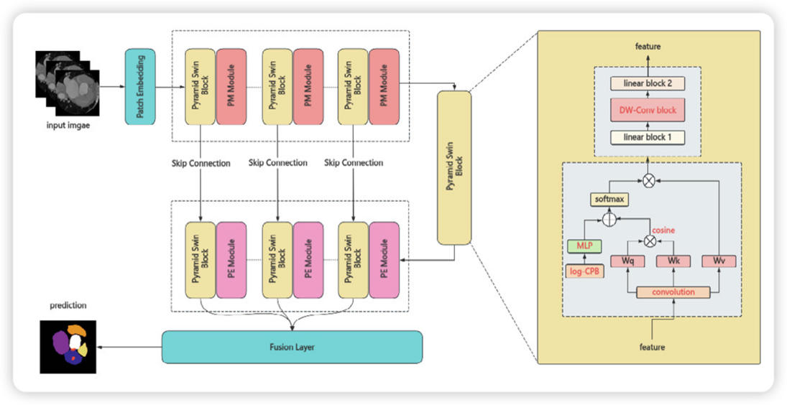

Welcome to Liu Jiacheng's Homepage
唯有幽默地看待现实，唯有在生命中轻盈地跳舞，开怀大笑，人才能找到摆脱生存危机的出路，在抵达完善的征程中迈出微小的一步。

Brief Intro
本人目前是山东大学2022级本科生,
Award Experience
2024
全国大学生软件创新大赛
全国一等奖第二名
第九届中国国际大学生创新大赛/互联网+
全国赛金奖
第十四届"挑战杯"秦创原中国大学生创业计划竞赛
全国金奖
中国高校计算机大赛·AIGC创新赛
全国二等奖
未来设计师·全国高校数字艺术设计大赛
全国二等奖
全国大学生数学竞赛
全国二等奖
第十七届中国大学生计算机设计大赛
全国二等奖
中美青年创客大赛
全国三等奖
美国大学生数学建模竞赛（MCM/ICM）
H奖
2023
第十五届全国大学生电工数学建模竞赛
全国二等奖
全国大学生数学建模竞赛
省级一等奖
2022
第四届"华数杯"全国大学生数学建模竞赛本科生组
全国二等奖
Mathorcup 高校数学建模挑战赛大数据竞赛本科生组
全国二等奖
Intern Experience
Shanghai Jiao Tong University EPIC Laboratory
研究方向: Efficient AIGC 2024年12月 - 至今
指导教师: 张林峰教授 [Page]
深度参与Efficient AIGC（人工智能生成内容）方向的研究，聚焦提升生成模型在图片与视频任务中的性能与效率。设计并实现创新性的缓存机制（Cache-based methods），有效加速Diffusion Transformer（DiT）推理过程，显著降低计算成本。分析并优化Transformer结构在扩散模型中的冗余计算路径，通过剪枝与特征重用策略，提升生成速度与质量。
Shandong Key Laboratory of Intelligent Electronic Packaging Testing and Application
研究方向: Medical Image Segmentation 2023年3月 - 至今
指导教师: 杨飞教授 [Page]
参与开发深度学习医学图像分割模型，涵盖CT、MRI、超声等多种临床影像数据。基于U-Net、nnU-Net与Transformer架构设计和优化模型，显著提升在实际医疗场景中的鲁棒性与泛化能力。在ACDC（心脏MRI）和Synapse（腹部CT）等权威数据集上实现优异性能，多个评估指标（如Dice系数、Hausdorff距离）超越主流基线方法。
Publication
* 表示通讯作者
-
SpeCa: Accelerating Diffusion Transformers with Speculative Feature CachingJiacheng Liu, Chang Zou, Yuanhuiyi Lyu, Fei Ren, Shaobo Wang, Kaixin Li, Linfeng Zhang*查看 Project Page
-
Accelerate Diffusion Transformers with Feature MomentumJiaxin Fang, Chang Zou, Jiacheng Liu, Yuanhuiyi Lyu, Xuming Hu, Linfeng Zhang*查看
-
From Reusing to Forecasting: Accelerating Diffusion Models with TaylorSeers
 Jiacheng Liu, Chang Zou, Yuanhuiyi Lyu, Junjie Chen, Linfeng Zhang*Arxiv Project Page Github 知乎
Jiacheng Liu, Chang Zou, Yuanhuiyi Lyu, Junjie Chen, Linfeng Zhang*Arxiv Project Page Github 知乎 -
PCMamba: Parallel Convolution-Mamba Network for Medical Image SegmentationJiacheng Liu, Liquan Dong, Bo Chen, Jiahui Shi, Weigang Lu, Shugang Zhang, Fei Yang*, Dong Li, Lei Zhang查看
-
FQCDM: Feature Quantization-Based Cardiac Image Diffusion Synthesis ModelJiahui Shi, Bo Chen, Jiacheng Liu, Weigang Lu, Shugang Zhang, Weimin Ma, Fei Yang*, Dong Li查看
-
PSVT: Pyramid Shifted Window based Vision Transformer for cardiac image segmentationXingyu Zhang, Jiacheng Liu, Xiaoli Xian, Bo Chen, Dong Li, Fei Yang*, Lei ZhangScienceDirect Github